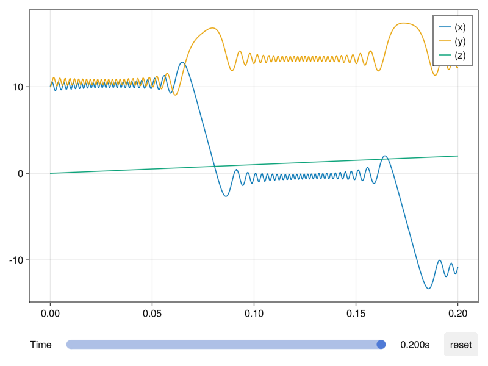
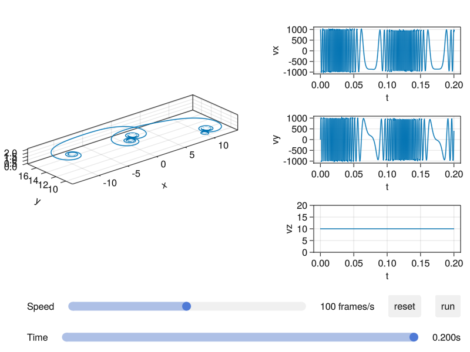

Plot Functions
Before using the plot recipes of Testparticle.jl, you need to install the package TestParticleMakie.jl and import it via using TestParticleMakie. All plot recipes depend on Makie.jl.
Convention
By convention, we use integers to represent the 7 dimensions in the input argument vars for all plotting methods:
| Component | Meaning |
|---|---|
| 0 | time |
| 1 | x |
| 2 | y |
| 3 | z |
| 4 | vx |
| 5 | vy |
| 6 | vz |
Basic usage
The simplest usage is directly calling the plot or lines function provided by Makie. For example,
plot(sol)Without other arguments, it will plot the 3d orbit of this particle. Other types of plots are supported, and you can use the keyword argument vars to choose the variables to be plotted. The basic form for vars is a Tuple. For example, if you want to plot the variable x as a function of time or the orbit, you can use it like this:
plot(sol, vars=(0, 1)) # 0 represents time, 1 represents x
plot(sol, vars=(1, 2, 3))If you want to plot a function of time, position or velocity, you can first define the function. The arguments of the function must be a 7-dimensional array, the elements of which correspond to the phase space coordinates and time, and the return value must be a Number. For example,
Eₖ(xu) = mₑ*(xu[4]^2 + xu[5]^2 + xu[6]^2)/2
lines(sol, vars=(0, Eₖ))This command will plot the kinetic energy as a function of x. The above form is equivalent to
lines(sol, vars=Eₖ)
lines(sol, vars=1)When the independent variable is not explicitly given, it will be set as time by default.
Because of the restriction of Makie.jl, plot and lines function cannot plot multiple lines at one call. If you want to plot multiple quantities in one figure, you may consider using plot!, lines! or the another plot recipe orbit.
You can choose the plotting time span via the keyword argument tspan. For example,
lines(sol, tspan=(0, 1))If the default axis or labels are too small, you can first create the customized figure and axis, and then plot inside:
f = Figure(resolution=(1200, 800), fontsize=18)
ax = Axis3(f[1,1],
title = "Particle trajectory",
xlabel = "X",
ylabel = "Y",
zlabel = "Z",
)
plot!(sol)Currently we do not directly support plotting multiple particle trajectories saved as the type EnsembleSolution. However, plotting multiple trajectories can be done with a simple loop:
f = Figure()
ax = Axis3(f[1,1])
for i in eachindex(sol)
lines!(sol[i], label="$i")
end
Legend(f[1,2], ax, nbanks=1, label=L"p")
fAdvanced usage
There are two plot recipes, which are more powerful than just using plot or lines. The orbit is designed to track the orbit of a particle or the variation of other variables. The panels can be updated on-the-fly interactively. The monitor is designed to monitor the variation of some physics quantities during the evolution of the orbit.
orbit
The basic usages of orbit are the same as other functions described above with the same arguments. Multiple quantities from one particle solution can be plotted in the same axis. For example,
orbit(sol, vars=[1, (1, 2), Eₖ])If a tuple contains vectors, they will be expanded automatically. For example,
orbit(sol, vars=(0, [1, 2, 3]))
orbit(sol, vars=([1, 2, 3], [4, 5, 6]))are equivalent to
orbit(sol, vars=[(0, 1), (0, 2), (0, 3)])
orbit(sol, vars=[(1, 4), (2, 5), (3, 6)])Interactive components

The slider can control the time span, and the maximum of time span will be displayed on the right of the slider.
The reset button can reset the scale of lines when the axis limits change. When you drag the slider, clicking reset button will reset the axis limits to fit the data.
monitor
The usage of vars for this function is different from those in orbit. It can only be a list and its length is equal to 3. The type of its elements must be an Integer or Function. The form of the function is same as those prescribed by orbit. For example,
Eₖ(xu) = mₑ*(xu[4]^2 + xu[5]^2 + xu[6]^2)/2
monitor(sol, vars=[1, 2, Eₖ])Interactive components

After first click of the run button, the evolution of the orbit will be displayed from the beginning. For other times, it will start from the time set by the time slider. The functionality of reset button is the same as above.
The time slider controls the time span. The speed slider controls the speed of the animation.